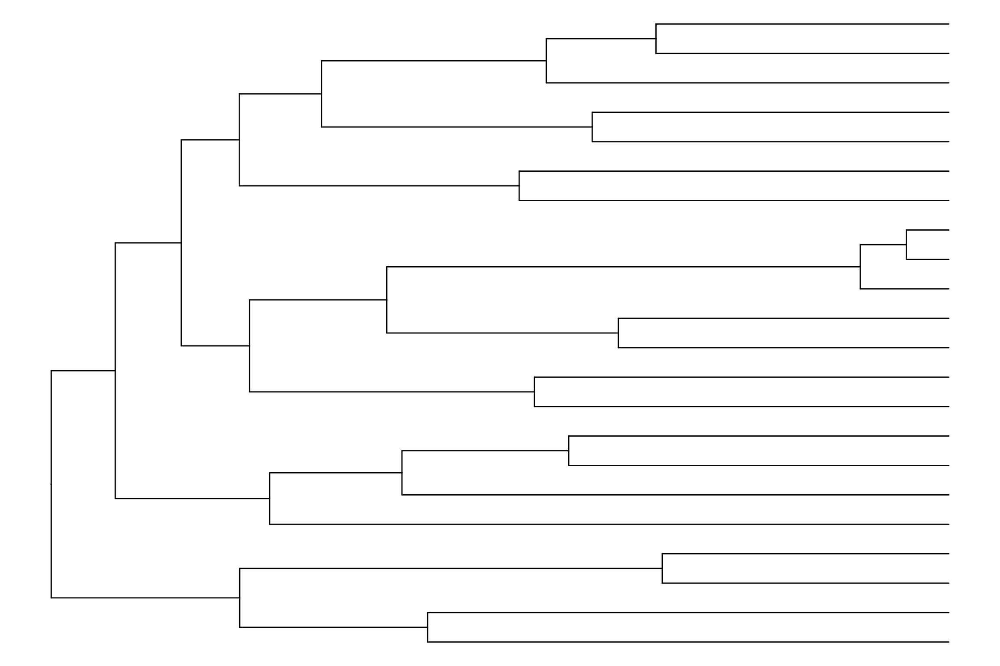
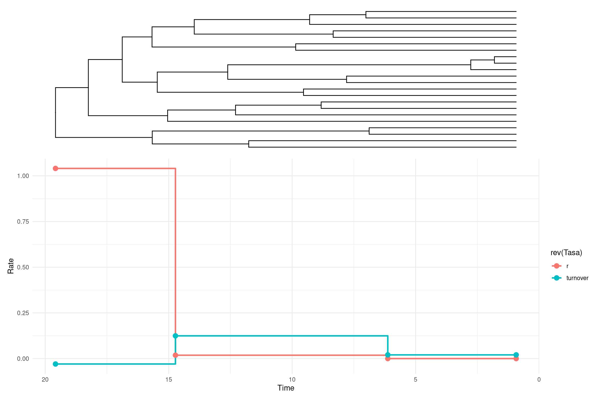

Haz clic en la imagen para ver el PDF de la presentación
Modelos con cambios en las Tasas de diversificación en R con TreePar
Introducción
En estudios filogenéticos, los modelos de nacimiento-muerte (birth-death models) permiten inferir cómo han cambiado las tasas de diversificación (\(\lambda\)) y extinción (\(\mu\)) a lo largo del tiempo. Sin embargo, estas tasas no son siempre constantes. Diversos eventos evolutivos, como la aparición de nuevas adaptaciones o cambios ambientales, pueden causar variaciones en la dinámica de diversificación de un linaje.
El paquete TreePar permite ajustar modelos de diversificación con cambios en la tasa mediante la función bd.shifts.optim(). Esta función estima la mejor combinación de tasas de diversificación y extinción en diferentes periodos de tiempo, según la estructura de una filogenia dada.
Cargar librerías y el árbol filogenético
# Cargar las librerías necesariaslibrary(ape) library(TreePar)library(tidyverse)library(ggtree)# Cargar el árbol desde un archivo Nexustree <-read.nexus("../docs/u1_PatDiv/subarbol_ingroup.nex")# Visualizar el árbolggtree(tree) +theme_tree()

Obtención de los tiempos de diversificación
Extraeremos y ordenaremos los tiempos de diversificación (tiempos de ramificación) del árbol:
# Obtener y ordenar los tiempos de especiación# La función getx() extrae los tiempos de ramificación del árbol.times <-sort(getx(tree), decreasing =TRUE) # sort() ordena los tiempos en orden descendente.times <-unname(times) # elimina los nombres de los elementos del vector para simplificar su manipulación.print(times)
Definiremos los parámetros necesarios para el análisis de cambios en las tasas de diversificación:
rho <-22/26# Proporción de especies muestreadas (22 de 26 especies)grid <-0.2# Tamaño de la grilla de búsqueda de cambios de tasa (en millones de años)start <-min(times) # Tiempo inicial para la búsqueda de cambios de tasaend <-max(times) # Tiempo final para la búsqueda de cambios de tasa
Aquí probamos un modelo en el que la tasa cambia en un tiempo \(t_{1}\)
Parámetro
Significado
time
Tiempos de ramificación (branching/speciation times) del árbol.
c(rho, 1)
rho indica que se ha muestreado el 80 % de las especies actuales. El segundo valor, 1, corresponde al evento/cambio considerado en el pasado.
grid
Intervalo de discretización del tiempo
start, end
Rango de tiempo para el análisis
ME=FALSE
No se consideran eventos de extinción masiva
survival=1
La verosimilitud se condiciona a la supervivencia del proceso; específicamente, a la supervivencia de los dos linajes existentes en la raíz.
esoneshift
resoneshift <-bd.shifts.optim(times, c(rho, 1), grid, start, end, ME=FALSE, survival=1)resoneshift[[2]][[2]] # Verosimilitud del modelo con un cambio en la tasa
library(ggplot2)library(ggtree)library(tidyr)library(patchwork) # Extraer resultados de restwoshift[[2]]resultados <- restwoshift[[2]][[3]]# Crear el gráfico del árbol con `ggtree`p_tree <-ggtree(tree) +theme_tree() +theme(plot.background =element_blank())# Crear el data frame con los valores obtenidosdf_prueba <-data.frame(turnover =c(resultados[2], resultados[2], resultados[3], resultados[4]), r =c(resultados[5], resultados[5], resultados[6], resultados[7]), tiempo =c(start, resultados[8], resultados[9], end) # Tiempo en sentido inverso (del pasado al presente))# Transformar datos al formato largo para ggplot2df_long <-pivot_longer(df_prueba, cols =c(turnover, r), names_to ="Tasa", values_to ="Valor")# Crear el gráfico de tasas con `geom_step()`p_tasas <-ggplot(df_long, aes(x = tiempo, y = Valor, color =rev(Tasa))) +geom_step(size =1, direction ="hv") +geom_point(size =3) +scale_x_reverse() +# Invertir el eje X para que el tiempo fluya del pasado al presentelabs(x ="Time",y ="Rate") +theme_minimal()# Superponer el árbol y el gráfico de tasas con ajuste de proporcionesp_tree + p_tasas +plot_layout(ncol =1, heights =c(1, 1.5))

Comparación de modelos usando Likelihood Ratio Test (LRT)
¿Qué es la prueba LRT?
La prueba de razón de verosimilitudes (Likelihood Ratio Test, LRT) permite comparar modelos anidados, es decir, modelos donde uno representa una versión más simple del otro.
En este caso se comparan:
un modelo birth-death sin cambios en las tasas,
un modelo birth-death con un cambio en las tasas,
un modelo birth-death con dos cambios en las tasas.
TreePar reporta el negative log-likelihood (\(-\log L\)). Por lo tanto, el estadístico LRT se calcula como:
No existe evidencia suficiente para concluir que el modelo con dos cambios mejora significativamente al modelo con un solo cambio.
Estimación episódica de las tasas de diversificación con RevBayes
Introducción
El modelo de nacimiento-muerte episódico (episodic birth-death, EBD) permite que las tasas de especiación (\(\lambda\)) y extinción (\(\mu\)) cambien a lo largo del tiempo. El tiempo se divide en intervalos y, dentro de cada intervalo, las tasas se consideran constantes.
En este ejercicio seguimos el tutorial oficial de RevBayes Episodic Diversification Rate Estimation y utilizamos un Horseshoe Markov random field (HSMRF) para modelar los cambios temporales en las tasas.
La idea central del HSMRF es modelar los cambios entre las tasas de intervalos consecutivos en escala logarítmica. Para la especiación, por ejemplo:
El prior HSMRF favorece que la mayoría de estos cambios sean pequeños:
\[
\Delta_i \approx 0
\]
pero permite ocasionalmente cambios grandes. De esta manera, el modelo puede representar largos periodos con tasas relativamente estables y algunos episodios con cambios pronunciados.
¿Qué aporta el HSMRF?
Escala logarítmica: permite modelar tasas positivas que pueden variar varios órdenes de magnitud.
Dependencia temporal: la tasa de un intervalo se construye a partir de la tasa del intervalo anterior.
Regularización: la mayoría de los cambios entre intervalos son favorecidos a ser pequeños.
Adaptabilidad local: algunos intervalos pueden presentar cambios grandes cuando los datos los apoyan.
La función calcula el valor del hiperparámetro de escala global para un HSMRF con el número indicado de episodios.
Con los valores por defecto, RevGadgets calibra el prior considerando un número esperado de cambios efectivos y define como cambio efectivo una modificación suficientemente grande entre tasas de episodios adyacentes.
Prior sobre la escala global
La escala global se modela mediante una distribución Half-Cauchy:
Cuando \(\sigma_i\) es pequeño, la distribución Normal queda muy estrecha alrededor de 0, por lo que el modelo favorece que:
\[
\Delta_i \approx 0
\]
Esto significa que la tasa cambia muy poco entre dos intervalos consecutivos.
Cuando \(\sigma_i\) es grande, la distribución Normal se ensancha y permite valores positivos o negativos de mayor magnitud para \(\Delta_i\), es decir, cambios más pronunciados en la tasa entre intervalos consecutivos.
Reconstruir las tasas de cada intervalo
RevBayes utiliza fnassembleContinuousMRF() para acumular estos cambios a partir de un valor inicial y reconstruir las tasas de cada intervalo.